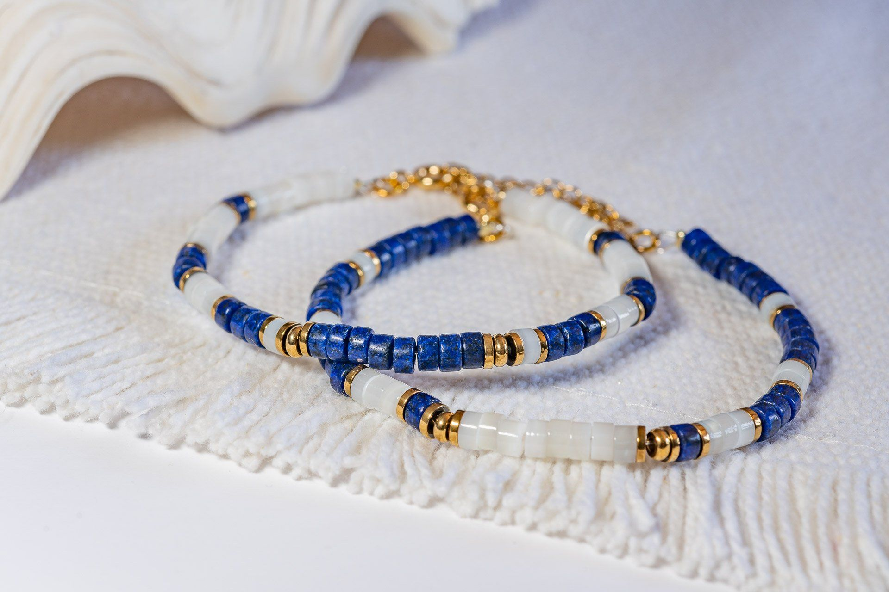
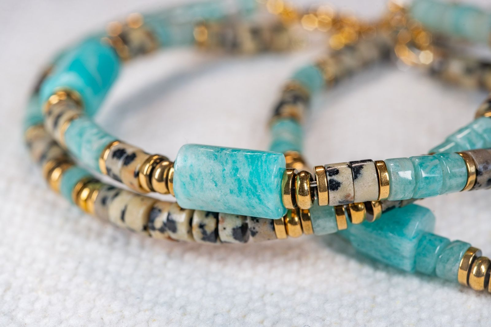
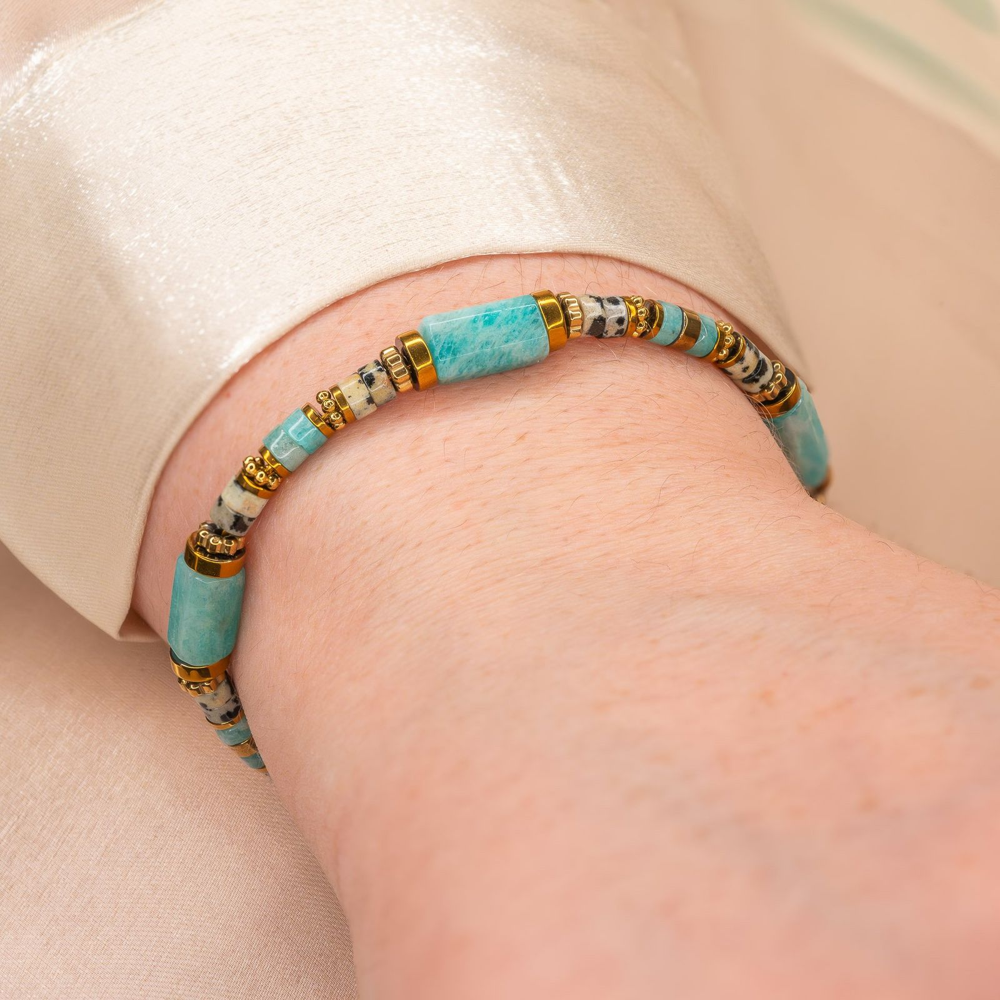
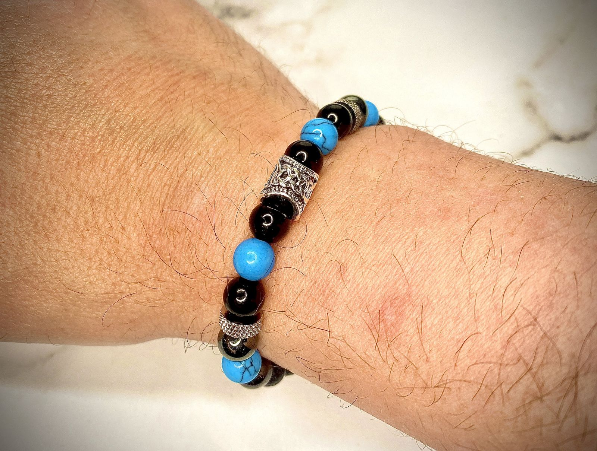

L’atelier TUTTI
Nous vous proposons des créations originales faites à la main avec des matériaux choisis spécifiquement
En savoir plusDécouvrez nos créations :

À propos de notre marque
ATELIER TUTTI crée des bijoux faits main avec soin, en mettant à l’honneur des pierres naturelles soigneusement sélectionnées.
Chaque pièce est unique, respectueuse d’une haute qualité, alliant authenticité, élégance et artisanat.

Bracelets pour femme
Chaque bracelet est une création unique, entièrement fait main, pensée pour sublimer la beauté naturelle de celle qui le porte. Confectionnés avec soin et passion, nos bracelets en perles naturelles allient élégance délicate, authenticité et qualité durable.
Les pierres, choisies pour leur éclat, leur texture et leur énergie, confèrent à chaque bijou une signature personnelle et intemporelle.
Que vous soyez attirée par la douceur des tons neutres ou l’intensité des couleurs profondes, chaque pièce est conçue pour accompagner vos gestes avec grâce et caractère.
En savoir plus
Bracelets pour homme
Découvrez notre collection de bracelets pour homme alliant élégance sobre, matières naturelles et savoir-faire artisanal. Chaque pièce est entièrement fabriquée à la main, avec une attention méticuleuse portée aux détails et à la qualité.
Nos bracelets sont composés de pierres naturelles rigoureusement sélectionnées, pour leur beauté brute, leur texture unique et leur caractère authentique.
Que vous cherchiez un style discret ou affirmé, nos créations s’adressent à l’homme moderne, soucieux de son style et attaché à des valeurs de durabilité et d’authenticité.
En savoir plusIls en parlent
« Des bracelets de qualité qui font plaisir à offrir, je recommande ! »Anaïs T.
« A la base c'était pour offrir mais quand j'ai vu la qualité j'en ai vite commandé pour moi aussi. »Marie-Louise B.
« J'ai offert un bracelet à mon mari et il est ravi, très belle finition et de qualité. »Angélique M.